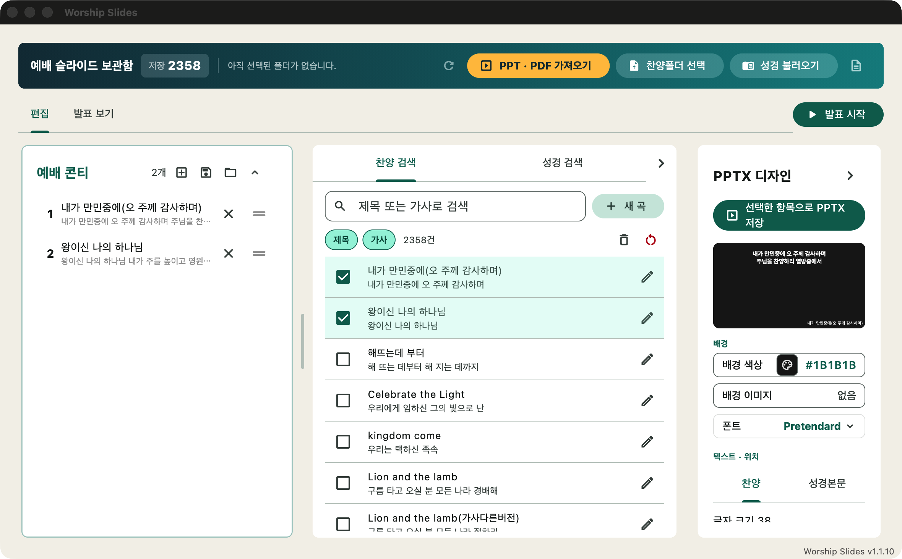
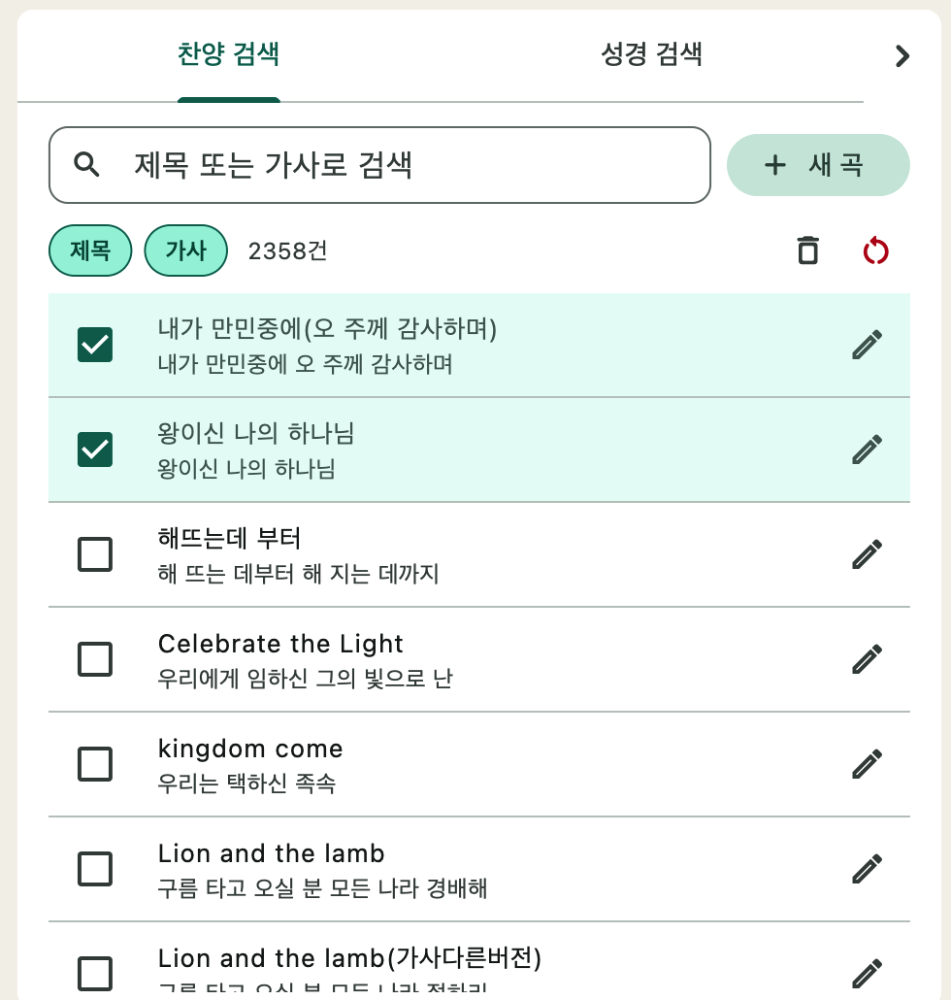
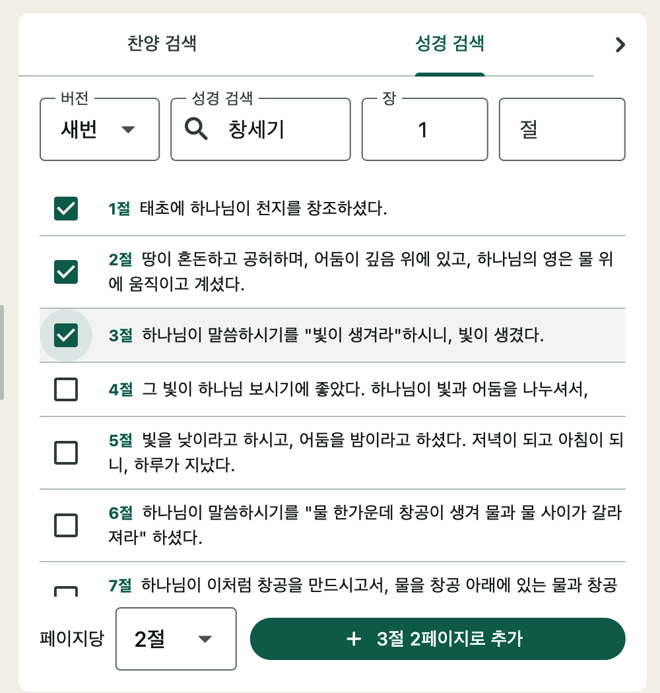
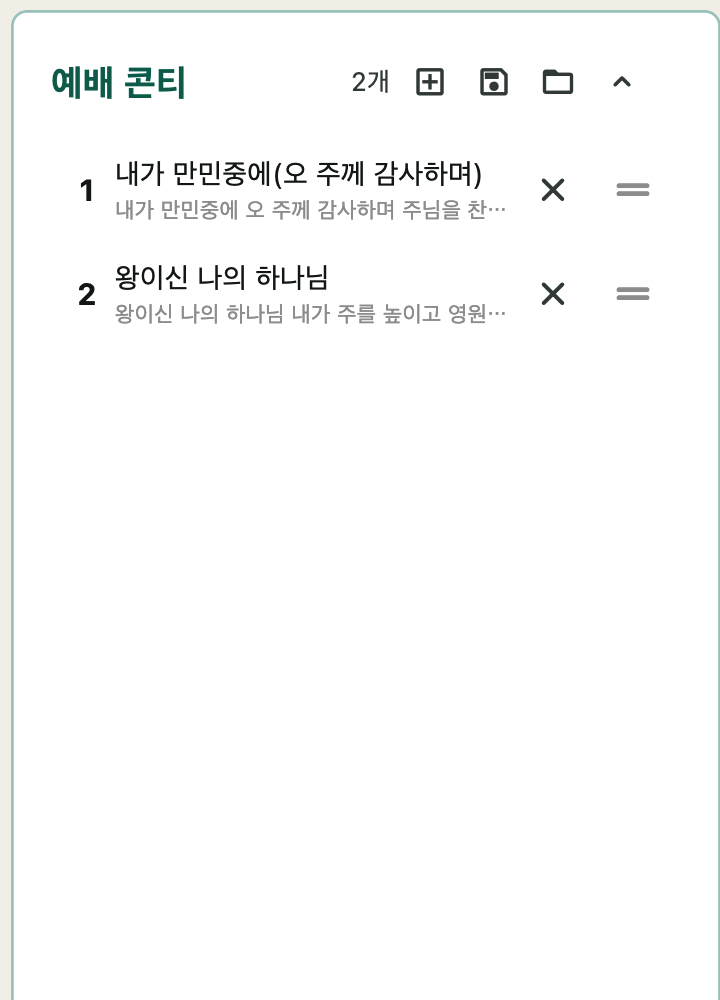
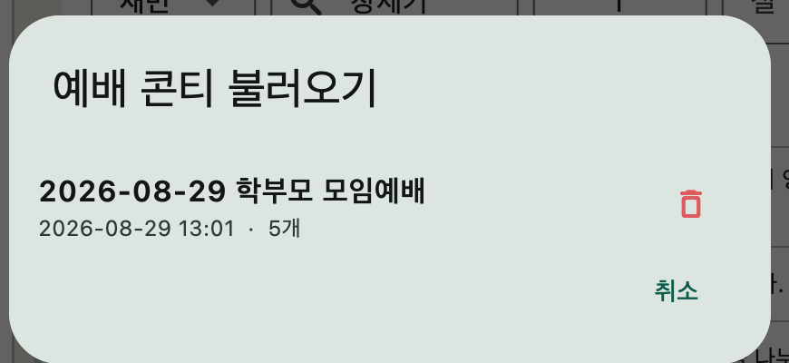
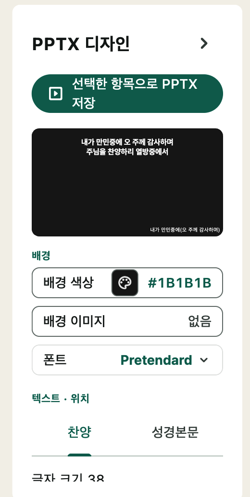
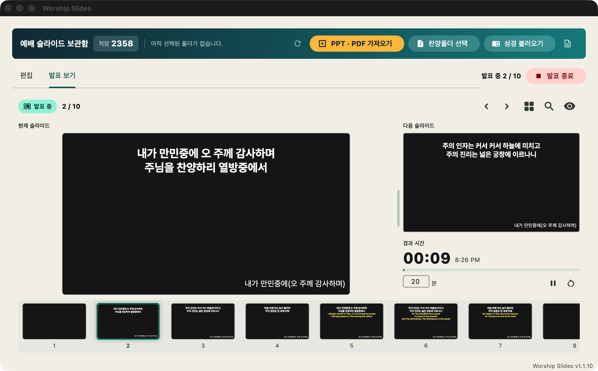
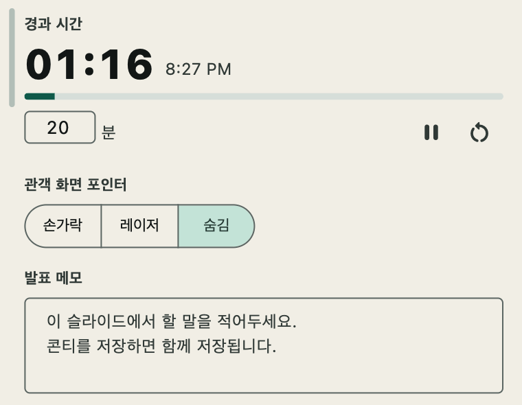

예배 슬라이드는 교회 예배 준비에 특화된 데스크탑 도구입니다. 흩어져 있는 찬양 PPT를 한 곳에 모아 검색하고, 성경 본문·외부 PPT/PDF·빈 페이지까지 하나의 예배 콘티로 조립한 뒤, 보조 모니터로 직접 발표하거나 PPTX 파일로 내보낼 수 있습니다.
| 찬양 폴더 일괄 가져오기 | .ppt / .pptx 파일을 폴더째 불러와 가사를 자동으로 데이터베이스에 저장 |
|---|---|
| 한 · 영 가사 자동 분리 | 한 슬라이드에 한글과 영어가 섞여 있어도 자동으로 구분해서 저장 |
| 제목 · 가사 검색 | 곡 제목 또는 가사 내용으로 즉시 검색, 검색 범위 선택 가능 |
| 성경 본문 | 성경 JSON을 불러와 버전 · 책 · 장 · 절 단위로 선택해 슬라이드로 추가 |
| 외부 PPT · PDF | 기존 PPT/PDF 파일을 페이지 이미지로 변환해 콘티에 그대로 삽입 |
| 예배 콘티 저장 | 완성한 순서를 이름 붙여 저장하고 다음 주에 다시 불러오기 |
| 발표 모드 | 보조 모니터에 전체화면 송출, 키보드 단축키로 이동 · 화면 끄기 |
| 발표 보기 | 메인 화면에는 다음 슬라이드 · 경과 시간 · 발표 메모 · 관객 화면 포인터 |
| PPTX 내보내기 | 배경 · 글자색 · 크기 · 정렬 · 폰트 · 배경 이미지를 설정해 PPTX 생성 |
.ppt(구형) 가져오기와 PPT 이미지 변환에 필요합니다. .pptx와 .pdf는 LibreOffice 없이 동작합니다.설치 폴더에서 Worship Slides.app(macOS) 또는 worship_slides.exe(Windows)를 실행합니다. 첫 실행 시 데이터베이스가 자동으로 만들어집니다.
worship_slides.db)은 앱 폴더 안에 저장됩니다. 앱 폴더를 통째로 옮기거나 복사하면 저장한 곡과 콘티도 함께 따라갑니다.Unlock Worship Slides.command를 한 번 실행한 뒤 앱을 열어 주세요.
| 상단 헤더 바 | PPT · PDF 가져오기 / 찬양폴더 선택 / 성경 불러오기 / 저장된 로그 추출 / 업데이트 확인 |
|---|---|
| 왼쪽 위 — 예배 콘티 | 발표할 항목의 순서 목록. 저장 · 불러오기 · 빈 페이지 추가 · 순서 변경 |
| 왼쪽 아래 — 검색 패널 | 찬양 검색 탭과 성경 검색 탭 |
| 오른쪽 — 편집 탭 | 슬라이드 미리보기와 PPTX 디자인 설정, PPTX 저장 버튼 |
| 오른쪽 — 발표 보기 탭 | 발표자 콘솔: 현재 · 다음 슬라이드, 경과 시간, 발표 메모, 포인터 |
찬양 PPT 파일이 모여 있는 폴더를 한 번 가져오면, 가사가 데이터베이스에 저장되어 이후에는 검색만으로 곡을 꺼내 쓸 수 있습니다.
.ppt(구형) 파일이 섞여 있는데 LibreOffice가 없으면 "LibreOffice가 필요합니다" 안내가 뜹니다. .pptx만 있다면 이 안내는 나타나지 않습니다.가사는 빈 줄을 기준으로 페이지가 나뉩니다. 가사를 직접 입력하거나 수정할 때도 같은 규칙입니다.
| 새 곡 추가 | 찬양 검색 패널의 [새 곡] 버튼 → 제목 · 한글 가사 · 영어 가사(선택) 입력 후 저장 |
|---|---|
| 가사 수정 | 곡 목록에서 수정 아이콘을 눌러 제목과 가사를 편집 |
| 선택 곡 삭제 | 곡을 체크한 뒤 [선택 곡 삭제] |
| DB 초기화 | 저장된 찬양을 모두 삭제합니다. 되돌릴 수 없으니 주의하세요. |
성경 본문을 쓰려면 성경 JSON 파일을 한 번 불러와야 합니다. 한 번 저장하면 계속 유지됩니다.
[{"book":"창세기","chapter":1,"verse":1,"text":"…"}]왼쪽 위 예배 콘티 패널이 실제로 발표하거나 내보낼 순서입니다. 네 가지 항목을 담을 수 있습니다.


이미 만들어 둔 광고 PPT나 악보 PDF를 그대로 콘티에 넣을 수 있습니다.
콘티 패널의 [빈 페이지 추가]로 배경만 있는 빈 슬라이드를 넣을 수 있습니다. 기도 시간이나 화면 정리용으로 쓰세요.

| 순서 변경 | 항목의 ⠿ 핸들을 드래그해 위아래로 이동 |
|---|---|
| 항목 제거 | 항목 오른쪽 ✕ 버튼. 찬양이면 검색 목록의 체크도 함께 해제됩니다. |
| 미리보기 전환 | 항목을 클릭하면 오른쪽 편집 탭의 미리보기가 해당 항목으로 이동 |
| 슬라이드 수정 | 곡 항목의 수정 버튼으로 그 자리에서 가사를 다듬을 수 있습니다. |
| 전체 초기화 | 콘티를 비웁니다. |


오른쪽 편집 탭에서 슬라이드 모양을 정합니다. 변경 사항은 미리보기에 바로 반영되고, 발표 화면과 내보낸 PPTX가 미리보기와 똑같이 보입니다. 설정은 찬양과 성경본문 각각 따로 지정합니다.
| 글자 크기 | 가사 · 본문의 글자 크기(pt) |
|---|---|
| 본문 수평 정렬 | 좌측 / 중앙 / 우측 |
| 본문 수직 위치 | 상단 / 중단 / 하단 |
| 본문 상단 여백 | 텍스트 상자를 위아래로 미세 조정 |
| 배경 색상 | 스와치에서 고르거나 #RRGGBB 직접 입력 |
| 배경 이미지 | 이미지 파일을 배경으로 지정 (없음으로 되돌릴 수 있음) |
| 한글 가사 색상 | 한국어 가사 글자색 |
| 영어 가사 | 켜면 영어 가사도 함께 표시. 색상은 따로 지정 |
| 제목 표시 | 곡 제목 / 성경 참조(예: 롬 8:28)를 슬라이드에 표시 |
| 제목 크기 · 색상 · 위치 | 제목의 크기, 색, 수평 · 수직 위치 |
| 폰트 | Pretendard · 나눔고딕 · 나눔명조 |
콘티에 담긴 항목 전체를 하나의 PPTX 파일로 만듭니다. PowerPoint · Keynote · LibreOffice Impress에서 바로 열립니다.
PPTX로 내보내지 않고 앱에서 바로 화면에 띄울 수 있습니다.
| → ↓ Space | 다음 슬라이드 |
|---|---|
| ← ↑ | 이전 슬라이드 |
| 숫자 + Enter | 해당 번호의 슬라이드로 바로 이동 |
| B | 화면 끄기 (검은 화면) / 다시 켜기 |
| ESC | 발표 종료 |

오른쪽 발표 보기 탭은 발표자만 보는 화면입니다. 관객 화면에는 나오지 않습니다.
| 현재 슬라이드 | 관객이 보고 있는 화면을 그대로 표시 |
|---|---|
| 다음 슬라이드 | 바로 다음에 나올 화면을 미리 확인 |
| 경과 시간 | 발표 시작부터의 시간. 일시정지 · 리셋 가능 |
| 발표 메모 | 슬라이드마다 할 말을 적어 둘 수 있고, 콘티를 저장하면 메모도 함께 저장됩니다. |
| 관객 화면 포인터 | 손가락 / 레이저 / 숨김. 미리보기 위에서 마우스를 움직이면 관객 화면에 그대로 표시됩니다. 크기도 조절할 수 있습니다. |
| 모든 페이지 보기 | 전체 슬라이드를 격자로 보고 원하는 페이지로 바로 이동 |
| 영역 확대 | 슬라이드의 일부를 크게 확대해 보여 주기 |
| 화면 끄기 | 관객 화면만 검게 만들기 (B와 동일) |

앱을 켜면 새 버전이 있는지 자동으로 확인하고 안내 배너를 띄웁니다. 상단 헤더의 [업데이트 확인]으로 직접 확인할 수도 있습니다. [지금 업데이트]를 누르면 새 버전을 내려받습니다.
문제가 생겼을 때 상단 헤더의 [저장된 로그 추출]로 기록을 확인하거나 [로그 폴더 열기]로 로그 파일을 열어 개발자에게 전달할 수 있습니다.
| 곡을 가져왔는데 목록에 없습니다 | 검색 범위(제목 / 가사) 체크를 확인하고 검색창을 비워 전체 목록을 확인해 보세요. 가사가 이미지로만 된 PPT는 글자를 읽을 수 없어 저장되지 않습니다. |
|---|---|
| .ppt 파일을 못 읽습니다 | LibreOffice를 설치해 주세요. 안내창의 [LibreOffice 다운로드] 버튼으로 이동할 수 있습니다. |
| 가사 줄바꿈이 이상합니다 | 가사 수정 화면에서 페이지를 나눌 위치에 빈 줄을 넣어 주세요. |
| 영어 가사가 안 나옵니다 | 편집 탭에서 영어 가사 옵션을 켜 주세요. |
| 발표 화면이 노트북에 뜹니다 | 보조 모니터를 확장 모드(미러링 해제)로 연결한 뒤 발표를 다시 시작하세요. |
| 단축키가 안 먹습니다 | 메인 창을 한 번 클릭해 창을 활성화한 뒤 눌러 보세요. |
| 다른 컴퓨터에서 이어서 쓰고 싶습니다 | 앱 폴더를 통째로 복사하면 데이터베이스와 콘티가 함께 따라갑니다. |
| 곡을 지웠는데 저장한 콘티는 괜찮나요? | 네. 콘티에는 저장 당시의 가사가 함께 보관되어 그대로 발표 · 내보내기가 됩니다. |